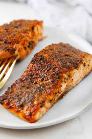

Air Fryer Salmon

Seasoned Air Fryer Salmon Recipe
This recipe uses a few spices to add some flavor and then 10-15 minutes of cook time in the air fryer for a juicy, flaky and flavorful piece of salmon, perfect with almost any side dish.
Ingredients
- 1lb Salmon Filet
- Garlic
- Paprika
- Salt
- Pepper
Steps
- Season salmon filet with garlic, paprika, salt and pepper.
- Place foil in the air fryer basket.
- Set seasoned salmon into the air fryer to cook.
- Set air fryer to cook for 10-15 minutes at 400 degrees.
- Flip the salmon over halfway through the cooking time.
- Remove when timer is finished.